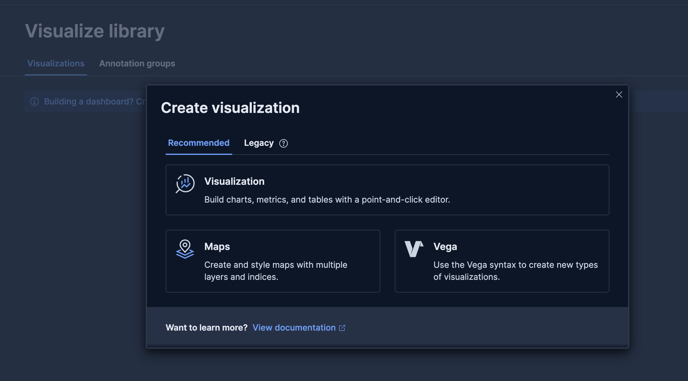
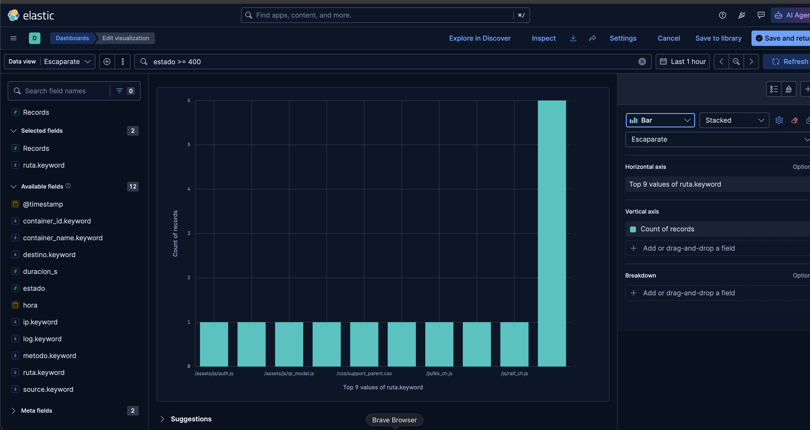
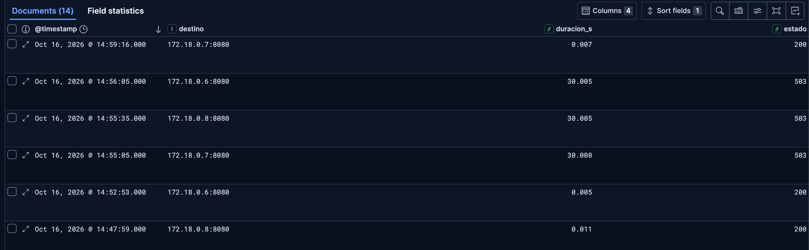

Actividad 3.4 — Encuentra una incidencia en los registros¶
Contexto¶
Escaparate ya se publica por HTTPS y Nginx reparte las peticiones entre varias réplicas. Cuando un usuario comunica que algo falla o tarda demasiado, abrir la página no basta para saber qué ha ocurrido.
Consultarás los registros del despliegue desde Kibana para relacionar cada petición con su ruta, código de respuesta, duración y destino. Después provocarás una caída controlada de PostgreSQL y utilizarás esos registros para reconocer el fallo y comprobar la recuperación.
Antes de comenzar¶
La instalación de Elasticsearch, Fluent Bit y Kibana es soporte para el ejercicio, no un objetivo de administración. La configuración se entrega preparada. El recorrido requiere Discover, un gráfico y una incidencia. Todos los apartados forman parte de la actividad.
1. Preparación guiada en EC2¶
Parte de la 3.3 funcionando por HTTPS y fusionada en main. Descarga el soporte de las actividades 3.4 y 3.5 y extráelo en la raíz del repositorio: debe aparecer soporte-tema3/. Contiene la pila de observabilidad y los auxiliares de laboratorio.
En EC2, desde la raíz del repositorio, prepara la rama y los directorios:
| Bash | |
|---|---|
Desde esa misma raíz:
El archivo compose.override.yaml se incorpora automáticamente al usar docker compose sin -f. Consérvalo también en la 3.5. Así no se pierde el envío de logs al recrear una aplicación. El script de preparación configura vm.max_map_count y swap de laboratorio; no es una receta de optimización de producción.
Espera al arranque y comprueba:
| Bash | |
|---|---|
Esperamos Elasticsearch saludable, Kibana 200 y kibana-init en Exited (0) con Data view Escaparate preparado. Un 000 durante el arranque no implica que debas reinstalar: espera y consulta los logs. Si el inicializador agotó su espera, cuando Kibana esté preparado ejecuta sudo docker compose up -d --no-deps --force-recreate kibana-init.
Kibana, Elasticsearch y Fluent Bit publican sus puertos solo en 127.0.0.1. No abras 5601, 9200 ni 24224 en AWS.
2. Abre el túnel desde tu equipo¶
En una terminal de tu ordenador —no dentro de la sesión SSH de EC2—, sustituye las rutas y la IP:
| Bash | |
|---|---|
En PowerShell funciona el mismo comando, con una ruta como C:\ruta\clave.pem. Déjalo abierto y visita http://localhost:5602. Si el puerto local está ocupado, cambia únicamente el primer 5602 por 5603 y abre ese puerto en el navegador. No cambies los puertos de EC2.
3. Genera datos e interpreta un documento¶
En EC2, desde practicas/compose, define la URL real:
| Bash | |
|---|---|
El generador mezcla peticiones correctas, rutas inexistentes y peticiones de distinta duración. Los errores intencionados son parte del experimento.
En Kibana abre Discover, selecciona Escaparate, elige Last 15 minutes y pulsa Refresh. Busca:
| Text Only | |
|---|---|
Añade como columnas estado, duracion_s y destino. Deben aparecer tres destinos internos. Abre un documento y lee estos campos:
| Campo | Interpretación |
|---|---|
ruta |
ruta solicitada, sin los parámetros de consulta |
estado |
código HTTP registrado por Nginx |
duracion_s |
duración total de la petición vista por Nginx, en segundos |
destino |
dirección del backend; puede contener varios intentos |
ip |
cliente visto por Nginx |
hora |
fecha y hora al escribir el registro |
No confundas duración total con tiempo de CPU de la aplicación. El tiempo @timestamp utilizado por la vista procede del flujo de logs. Si repartes la práctica entre sesiones, amplía el intervalo; antes de una incidencia nueva puedes volver a los últimos 15 minutos.
4. Crea un único gráfico de errores¶
Retira los filtros de Discover. Para crear el gráfico sigue esta secuencia de la versión utilizada:
- Visualize library → Create new visualization.
- En Recommended, pulsa la tarjeta Visualization. Abre el editor Lens aunque la tarjeta no se llame «Lens».
- Selecciona Escaparate y escribe
estado >= 400en la barra KQL. Pulsa Enter. - Mantén Bar y Stacked.
- Arrastra
ruta.keyworda Horizontal axis: operación Top values. - Arrastra Records a Vertical axis: operación Count.
- Deja Breakdown vacío. No selecciones sugerencias inferiores: pueden cambiar el tipo de gráfico.
- Guarda el panel como Errores por ruta y añádelo a un nuevo dashboard Observabilidad de Escaparate. Guarda también el dashboard.


Las cifras y rutas de las capturas son ejemplos, no resultados que debas reproducir exactamente. El servidor público puede recibir tráfico ajeno a nuestras pruebas. Other agrupa rutas fuera del Top. Si aparece un aviso de aproximación, puedes mantener el modo de precisión desactivado para esta práctica.
Atascos habituales:
- Gráfico vacío: comprueba intervalo, vista y filtros adicionales.
- Una única barra al 100 %: seleccionaste
Percentageo colocaste las rutas enBreakdown; vuelve aStackedy pásalas aHorizontal axis. - Para editar un panel del dashboard: selecciona su configuración y pulsa Edit in Lens. Al terminar, Save and return y luego Save del dashboard.
- Un filtro KQL del dashboard afecta a sus paneles; un filtro guardado dentro de la visualización es propio de ese panel. Mantén el filtro de errores dentro del gráfico.
5. Provoca una incidencia y comprueba su recuperación¶
En EC2:
| Bash | |
|---|---|
El script detiene PostgreSQL, realiza tres peticiones y vuelve a arrancarlo al terminar. Esperamos tres 503, que en la prueba del profesor tardaron unos 30 segundos cada una. El cliente espera hasta 60 segundos.
La recuperación automática cubre la salida normal y las interrupciones manejadas por el script. Si se cierra la conexión o se interrumpe la máquina, comprueba el estado y ejecuta sudo docker compose start bd cuando sea necesario.
Después:
| Bash | |
|---|---|
Debe volver a responder {"estado":"ok"}. Si aún está arrancando, espera y repite.
En Discover filtra:
| Text Only | |
|---|---|
Comprueba estado, duración y destino. Después quita AND estado >= 500 para ver también el 200 de recuperación. En el gráfico puede quedar agrupada en Other; Discover permite encontrarla sin depender del Top.

Si ves 499 en lugar de 503: el cliente cerró la conexión antes de recibir la respuesta. Puede ocurrir si utilizas curl --max-time 15 y la respuesta tarda más de 15 segundos. No demuestra que falten logs: el filtro estado >= 500 excluye 499. Revisa primero la ruta sin filtrar estado.
Entrega breve¶
En entregas/tema3/actividad-3.4/actividad-3.4.md, incluye dos capturas guardadas en su carpeta img/: un documento con sus campos y la secuencia de error/recuperación. El gráfico debe quedar guardado. Responde en unas 100 palabras:
- ¿Qué dependencia falló y qué datos permiten reconocerlo?
- ¿Por qué el túnel permite consultar Kibana sin publicar su puerto hacia Internet?
- Propón una alerta con umbral, ventana de observación, tiempo durante el que debe mantenerse la condición, destinatario y acción. No configures notificaciones reales.
Ejemplo para discutir, no valor universal: avisar si readiness devuelve 5xx durante dos minutos consecutivos, comprobándolo cada 30 segundos; revisar PostgreSQL antes de reiniciar aplicaciones. Justifica tu propuesta.
Documenta e integra¶
Actualiza el README con el acceso por túnel a Kibana y el arranque de la pila. En entregas/tema3/memoria-publicacion-ejecucion.md dibuja la arquitectura completa: Nginx, las tres réplicas, PostgreSQL, el volumen compartido y el recorrido de los logs hasta Kibana. Añade una frase sobre la función de cada componente; completarás el diagrama en la siguiente sesión.
No repitas los comandos de esta actividad en esa memoria. Revisa git status, conserva la configuración y los scripts en practicas/, registra los cambios, publica sesion-09 y abre la PR hacia main. Comprueba los checks y fusiona mediante Create a merge commit. No versiones contraseñas, certificados privados ni archivos de cookies.